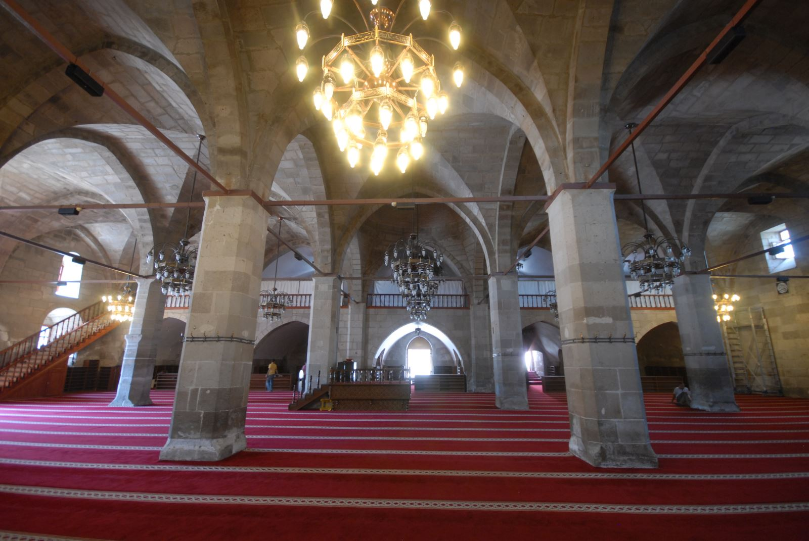

Selçuklu mimarisinin en güzel örneklerinden olan Ulu Camii, Kılıçarslan'ın oğlu Rükneddin Mesud tarafından yaptırılmıştır. Karamanoğulları Dönemi'nde genişletme ve onarım çalışmaları yapılan caminin kitabesinde ''Bunun yapılmasını ve yenilenmesini merhum ve mağfur Ala-ed-din Bey'in oğlu yüce Sultan Mehmed, 811 yılında emretti'' yazar ve yine aynı kitabede caminin mimarı olan Mimar Firuz'un adı yazılmıştır. Osmanlı kayıtlarında ise caminin ismi ''Karamanoğlu Mehmed Bey Camii'' olarak geçmektedir.
Ulu Camii, kareye yakın bir planda, düzgün kesme taştan yapılmıştır. Anadolu Selçuklu beyliklerinin tipik süslemeleri ile bezenmiş olan batı cephesindeki taç kapıdan giriş yapılır. Kıble yönünde dört, kıbleye dik olarak üç, toplam on iki ayak bulunmaktadır. Bu ayaklar birbirine kemerlerle bağlıdır. Taç kapının solundan bir merdivenle üzeri çapraz tonoz örtülü olan kadınlar mahfiline çıkılmaktadır. Camiinin içinde Selçuklu devri ahşap işçiliğinin şaheser örneği bir minberi vardır. Döneminin en ünlü ağaç oyma, sedef kakma ve kalem işleri ustalarından Nüştekin'ül Cemali tarafından yapılmıştır. Abanoz ağacından yapılan bu minberde usta; yazının, sedef kakmacılığın, ince ağaç işçiliğinin ve süslemenin her çeşit inceliğini bir arada kullanmıştır. Minberin üzerinde Kuran-ı Kerim’den Ayetler ile Selçuklu Sultanlarına ithafen methiyeler yazılı olup, çeşitli motiflerle de eser süslenerek zenginleştirilmiştir.

Ayrıca Ulu Camide bulunan ve Selçuklu ile Osmanlı dönemine ait bir çok halı ve kilim seccade Aksaray Müzesi'nde koruma altına alınmış, bunlardan bir kısmı da müzede sergilenerek ziyaretçilerin beğenisine sunulmuştur.Dilerseniz ziyaret edebilirsiniz.